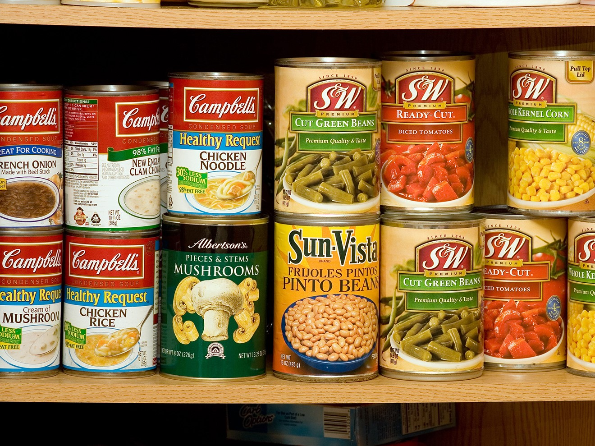
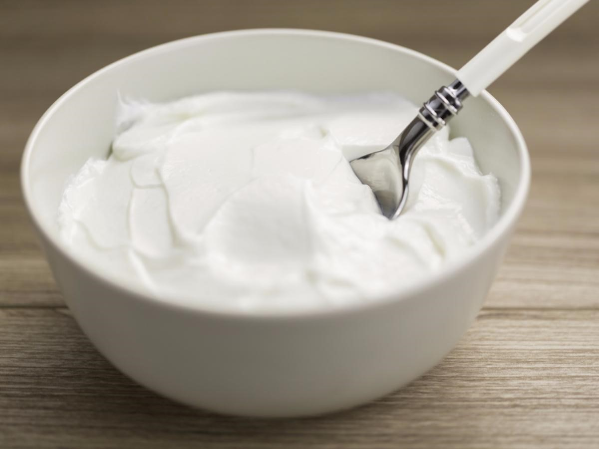
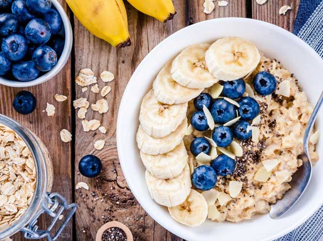

To cook healthy, you need healthy ingredients! Healthy ingredients
can be found in any local grocery store, but if you'd like a
starting point, you can view some of our favorite food essentials
and stores below.
Our Food Picks
1 / 11
Eggs - versatile and easy to cook, prepare them as
omelettes, fry them, or scramble them
2 / 11
Brown Rice - healtheir than white rice, and just
as good
3 / 11

Canned Soup - easily prepare a warm soup to
complete a meal
4 / 11
Frozen Vegetables (Peas, Carrots, Corn) -
long-lasting, easy to cook, and healthy
5 / 11

Greek Yogurt - a great complement to many foods, and
a good afterschool snack
6 / 11
Honey - a more natural sweetener than sugar, but
just as flavorful
7 / 11
Nut Butters (peanut, almond, etc.) - spread them on fruit,
toast, or many more
8 / 11
Nuts and Granola - a reliable and crunchy snack
9 / 11

Oatmeal - easy, quick, and filling, add whatever
toppings you want
10 / 11
Quinoa - a healthy plant superfood that's high in
protein
11 / 11
Whole-Wheat or Whole-Grain Pasta and Bread - carb
essentials to have at home